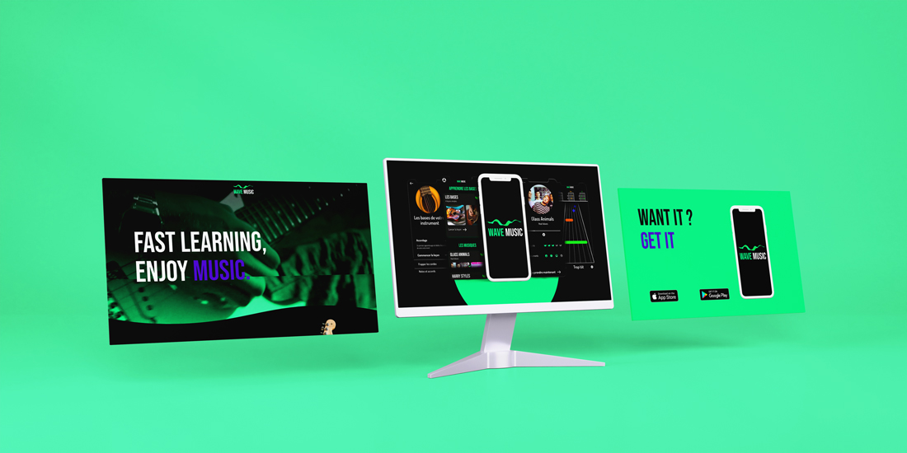
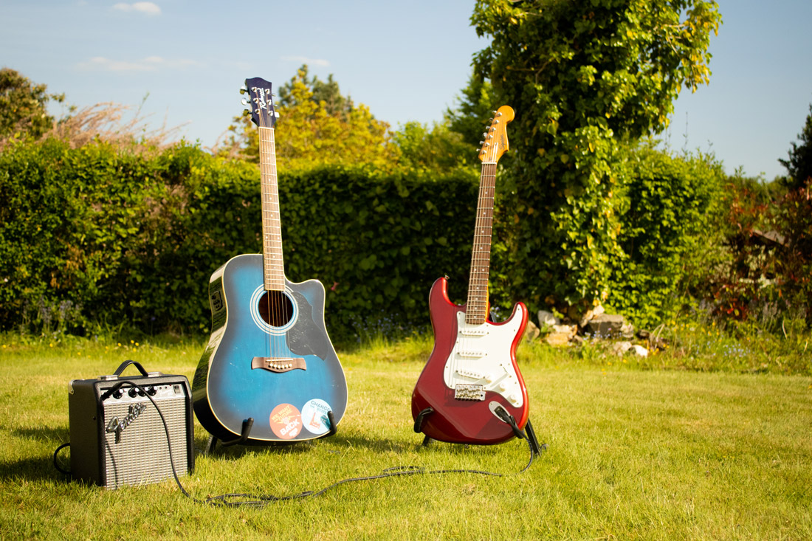

Case Study.
Le dernier projet
Nous y sommes, le dernier projet de cette année et pas des moindres : le TFA ou travail de fin d’année. La différence de ce projet par rapport aux autres est la liberté. Ce projet est plutôt libre, mais nous n’avons que deux mois pour le réaliser. C’est donc le moment de tout donner pour finir l’année en beauté.
Trouver l'idée
La première difficulté ? Trouver l’idée ! J’ai d’abord pensé à une application permettant de trouver des activités lorsque l’on a rien à faire. Sauf qu’après-réflexion, le projet ne semble pas super intéressants et surtout Tripadvisor existe déjà. J’ai donc réfléchis a d’autres idées et l’illumination m’est venue : la musique. J’ai toujours eu envie de jouer d’un instrument de musique, mais c’était très compliqué d’apprendre seul. C’est ainsi que mon idée est née : une application pour apprendre à jouer d’un instrument facilement et de manière amusante.
Vérifier son idée
Il faut maintenant vérifier que mon idée est fiable, bonne et qu’elle fonctionnera. Comment ? En demandant aux concernés bien évidemment. Mon hypothèse est que la plupart des gens ne jouent pas d’un instrument, car ils pensent que ça prend trop de temps, que c’est cher et que c’est impossible sans prendre de cours.
Les résultats
J’ai donc créé un sondage afin d’avoir les réponses à mes questions et vérifier si les gens seraient intéressés par mon projet. Les réponses récoltées m’ont permis de voir l’intérêt du public, mais aussi d’apprendre les envies de mon public. Toutes ces informations seront très utiles au développement de mon projet.
Premier prototype
Il est maintenant temps de créer un prototype ou MVP (produit minimum viable) afin de résoudre les problèmes que les gens rencontrent. Le design et la direction artistique ne sont pas importants pour ce prototype. Nous améliorerons au fur et à mesure de le faire tester. Après quelques tests, j’ai pu améliorer mes fonctionnalités voir en supprimer certaines.
Design et nom
Place au design maintenant. Je commence d’abord par la tâche la plus compliquée selon moi : le nom. Trouver un nom accrocheur et pas trop long est une tâche ardue. Après des tests non-concluants, je trouve enfin un nom plutôt correct : Wave MUSIC. Pourquoi wave ? Je trouve qu’une vague peut représenter tout ce que l’on veut, ça pourrait représenter une forme de calme, de sérénité et d’harmonie, mais aussi représenter du choc, des secousses. Chacun peut l'interpréter comme il veut et c’est là l'essence de la musique elle-même.
“La musique [...] est la vapeur de l'art. Elle est à la poésie ce que la rêverie est à la pensée, ce que le fluide est au liquide, ce que l'océan des nuées est à l'océan des ondes.” Victor Hugo
La direction artistique
J’ai décidé de baser ma direction artistique sur le nom que j’ai choisi. Je vais donc faire un design avec beaucoup de vague et de courbes. Mais pour compenser, je vais choisir une typo assez épaisse et qui en impose. Mon meilleur choix est Bebas Neue, le contraste entre courbes et épaisseur fonctionne plutôt bien. Le choix des couleurs est plus compliqué, je dois d’abord choisir une couleur de fond. Ma préférence porte sur le sombre et je choisis une teinte vers le noir, mais pas trop. Les couleurs dominantes pour les applications de musique sont souvent le violet ou le bleu. Je décide de tester un vert pour avoir un contraste très élevé. Je demande l’avis à plusieurs personnes et le vert est sans aucun doute la couleur la plus appréciée.
Les premières modifications
La couleur et les formes appliquées à mon projet me font me rendre compte que certains éléments ne sont pas en harmonie avec mon projet. J'effectue donc des modifications en m’inspirant de certaines ressources. J’arrive enfin à un résultat qui me plaît.
Les tests utilisateurs
Mon prototype étant fini, il faut que je le fasse tester à des utilisateurs. Les retours sont tous plutôt bons. La couleur est vraiment bonne pour la plupart des gens. C’est assez simple d’utilisation, on comprend facilement et les utilisateurs adorent la façon d’apprendre à jouer les musiques (style Guitar Hero). Cependant je vois que certaines personnes ont du mal à trouver la première leçon : les bases. Pas de soucis je la modifie donc pour qu’elle soit plus facile à remarquer.
User journey
Avant de finaliser mon projet, je fais quelques User Journey pour ne rien manquer. Ces tests me font penser à deux éléments à ajouter : une section "activité" pour voir nos progrès et un bouton “Rappel” pour pouvoir continuer à utiliser l’application si on l’oublie.
La vidéo
Le choix pour la vidéo étant libre, je décide de libérer un petit peu ma créativité et de faire une fausse publicité que l’on pourrait retrouver sur Youtube par exemple. Même si le résultat n’est pas parfait, je suis plutôt content.
Lien vers la vidéoLe résultat final
Mon projet est enfin terminé et j’en suis plutôt fier. Le TFA m'a permis de remarquer l’effet des ateliers de l’année. Par exemple, Dataplay m'a permis de m’améliorer en design et d’apprendre à mieux gérer ma direction artistique. Aller à la rencontre de l’utilisateur m’a aussi donné beaucoup d’expériences et de comprendre l’importance de l’avis externe. Moi qui ai du mal à m'ouvrir aux autres et demander un avis, cette expérience m'a appris qu’il fallait que je le fasse plus souvent si je voulais progresser.